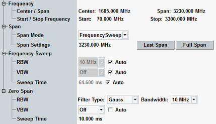

- Frequency domain ("Frequency Sweep" mode):
A swept spectrum analysis is performed using a Gaussian filter with configurable resolution bandwidth.
The frequency range can be specified either by its center and span or by its start and stop frequency. - Time domain ("Zero Span" mode):
The spectrum analyzer remains tuned to the specified "Center" frequency and the (IF) signal is filtered by a Gaussian or bandpass filter with configurable bandwidth.
For both domains, a video filter with configurable bandwidth can be applied to the resulting amplitude values and an appropriate detector can be selected for the display.

Defines the center frequency of the spectrum measurement. The center frequency is coupled to the frequency defined in the RF settings section.
In frequency sweep mode, setting the center frequency adjusts also the start and stop frequency. If necessary, the frequency span is reduced to the maximum value compatible with the supported frequency band.
In zero span mode, setting the center frequency does not affect the start frequency, stop frequency or span.
In the standalone (SA) scenario, this parameter is controlled by the measurement. In the combined signal path (CSP) scenario, it is controlled by the signaling application.
SA:
CSP: corresponding ...:SIGN<i>:... command
Defines the frequency span for the "Frequency Sweep" mode.
In the "Frequency Sweep" mode, the span setting adjusts the x-axis of the spectrum diagram.
Remote command:Defines the frequency range for the "Frequency Sweep" mode by setting the start and stop frequency.
Remote command:Setting the "Span Mode" activates either the "Frequency Sweep" mode or the "Zero Span" mode.
- In "Frequency Sweep" mode, the x-axis represents the swept frequencies and is scaled according to the configured frequency range. The y-axis represents the signal power. By default, the R&S CMW automatically sets the RBW, VBW and sweep time.
This mode is not supported for "Combined Signal Path" measurements. - In "Zero Span" mode, the x-axis represents time and is scaled according to the configured single-shot measurement ("Sweep") time. The y-axis represents the signal power. The VBW can be set automatically.
The meaning of the "Span" value is explained above.
- Its previous value in the history of span values
- Its maximum value
The minimum RBW is 100 Hz, the maximum RBW is 10 MHz.
With "Auto" RBW selection, the R&S CMW sets the RBW to 2% of the span, rounded up to the next possible RBW value - if such a value exists. Otherwise, the maximum RBW of 10 MHz is selected.
Remote command:The minimum VBW is 10 Hz, the maximum is 10 MHz.
With "Auto" VBW selection, the R&S CMW sets VBW = 3 x RBW, rounded up to the next possible VBW value if such a value exists. Otherwise, the video filter is switched off.
A restricted bandwidth of the logarithmic video signal causes signal averaging and thus results in a too low indication of the power.
Remote command:The time required to record the whole frequency spectrum that is of interest is described as sweep time.
Remote command:In "Zero Span" mode, it is possible to select the IF filter type used for signal analysis. Either Gaussian or bandpass filtering can be selected.
Remote command:In "Zero Span" mode, the RBW determines the frequency band around the center frequency whose power is measured.
For Gaussian filters, the minimum RBW is 100 Hz, the maximum RBW is 10 MHz. The bandpass filter is 40 MHz wide.
Remote command:The minimum VBW is 10 Hz, the maximum is 10 MHz.
With "Auto" VBW selection, the R&S CMW sets VBW = 3 x RBW, rounded up to the next possible VBW value if such a value exists. Otherwise the video filter is switched off.
A restricted bandwidth of the logarithmic video signal causes signal averaging and thus results in a too low indication of the power.
Remote command:The time spent on recording the signal power.
Remote command: